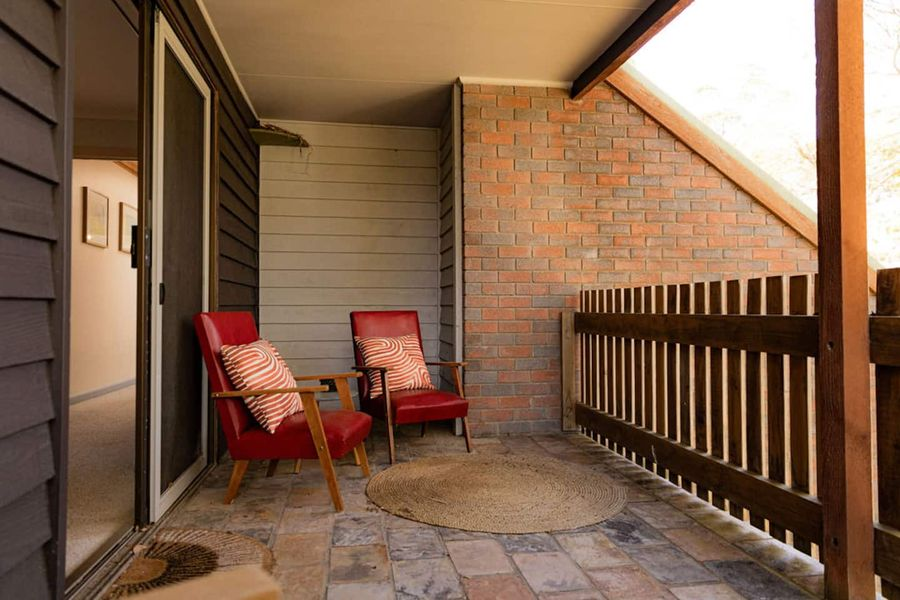
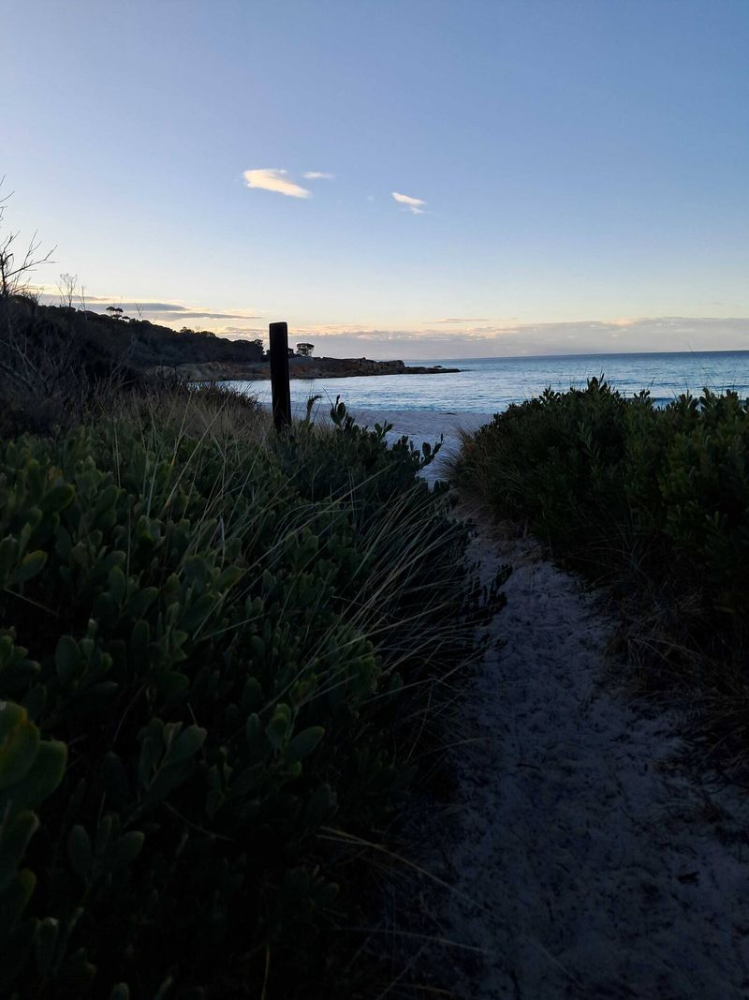
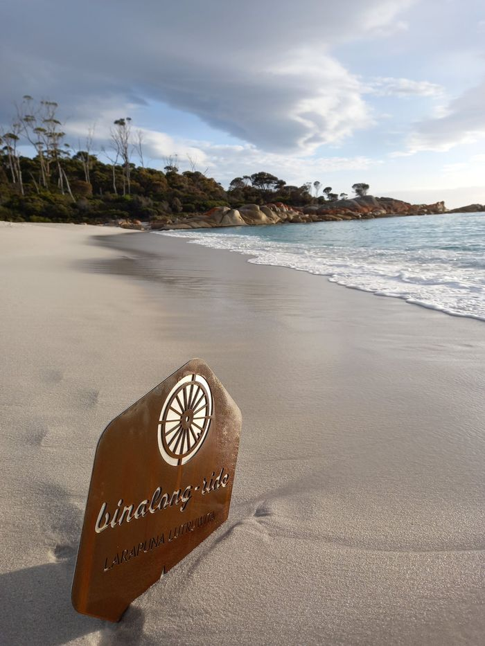
North Binalong Bay, larapuna / Bay of Fires
Out the door, down the track, onto the sand.
Our family beach shack sits at the quiet end of Binalong Bay. Baileys Beach is less than five minutes on foot, and the dog can come too.
- The deck pull the door shut
- The track through the scrub
- Baileys Beach 1.7km of sand
Under 5 minutesFrom the shack to the northern end of Baileys Beach.
An 80s shack, freshened up
New plush bedding and crisp laundered linen, comfortable modern lounges, a wood fire. The kitchen is still 80s but well kitted out, and the bathroom keeps its 80s pink and retro seashells.
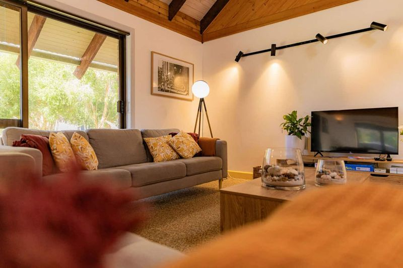
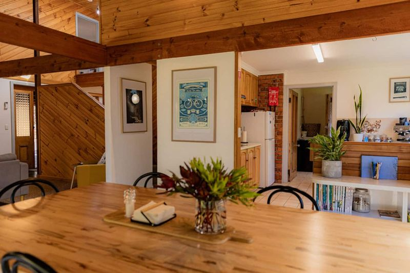
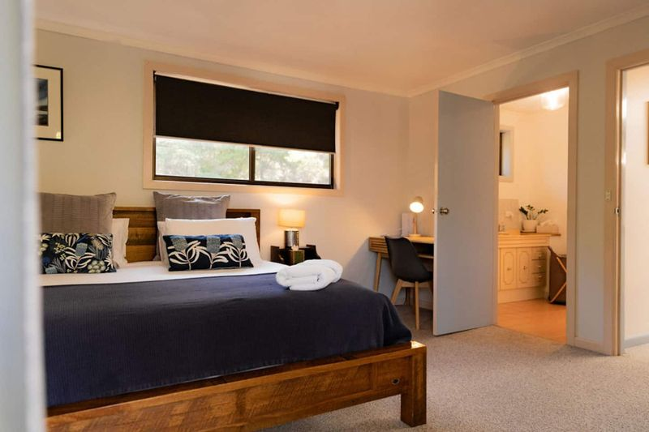
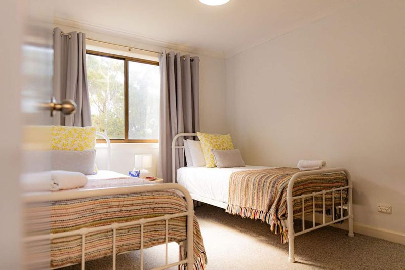
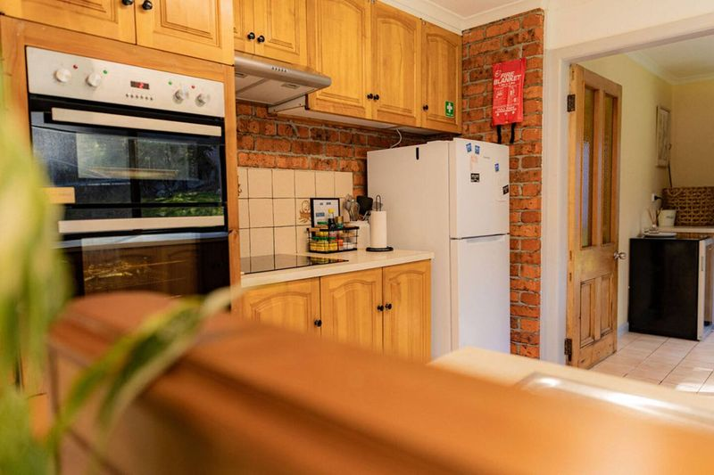
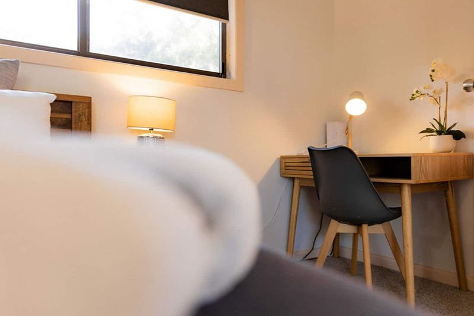
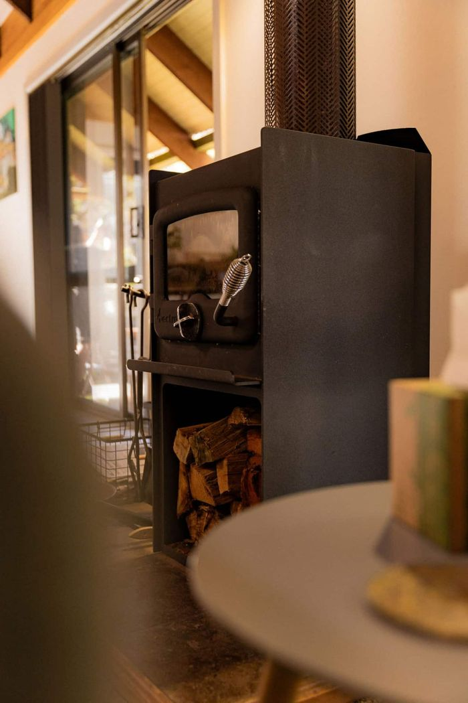
Beach all day, fire at night, and fast wifi if work follows you down the coast.
- Bedrooms
- A king room and a twin room.
- Living
- A big lounge and dining room, a wood burning fire and a 42 inch TV with Chromecast.
- Work
- A dedicated workspace on Starlink wifi.
- Outside
- A large deck for eating outdoors, a gas grill, a fenced backyard with bush all round, and parking for three cars.
Bring the dog
The backyard is fully fenced and the beach is a few minutes away. We put out a water bucket, food bowls and biodegradable poop bags.
- Dogs stay on the ground floor, off the beds and furniture.
- Our fences are low, so they don't suit big dogs or keen jumpers.
- Bring clean bedding, and keep dog food inside at night so the possums leave it alone.
- The nearest dog park is on Eagle Street in St Helens.
October to March is nesting season. Many local beaches close to dogs to protect nesting seabirds, and some parts allow dogs on a lead. Check the Break O'Day Council website before you go, and watch the high tide line for nests and hatchlings.
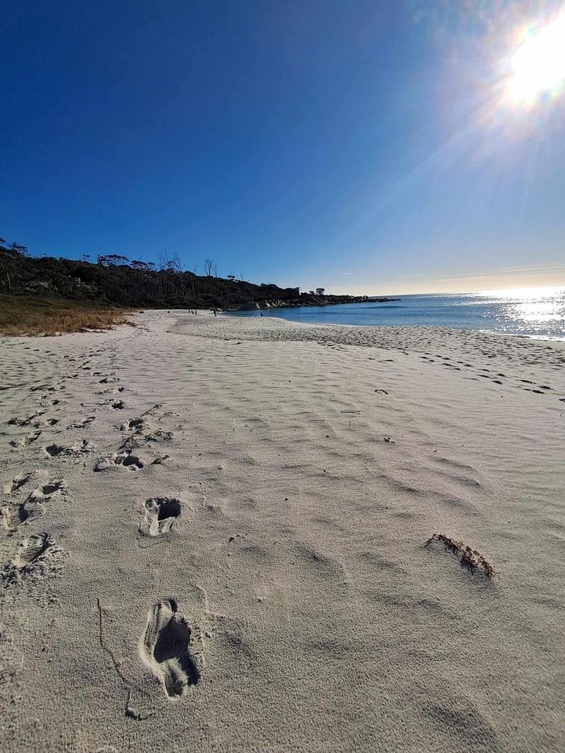
What's close
Hosts Lee and Chris love the outdoors, and the shack is set up for it: beaches, walks, bike trails and kayaks all close by.
Diana's Basin
The spot most people drive past. Stop for the birds: swans, grebes, ducks and cormorants, and in spring fuzzy grey cygnets along the shore.
| Baileys Beach, northern end | Under 5 min walk |
|---|---|
| Grants Lagoon, for waterbirds | 1km |
| Binalong Bay main street | 1km |
| Swimcart Lagoon | 2km |
| Swimcart Beach, where the Bay of Fires Trail ends | 2.5km |
| Bay of Fires mountain bike trails | 10 min |
| St Helens | 20 min |
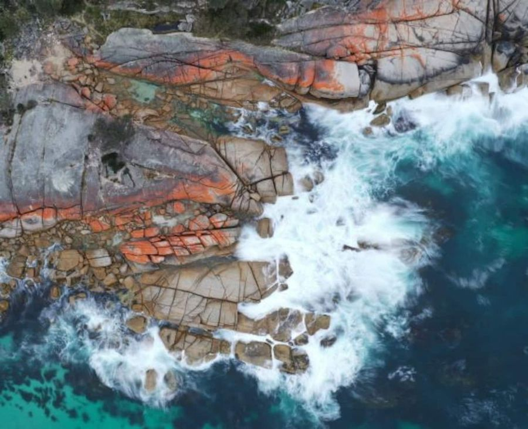
What guests say
4.92from 284 reviews on Airbnb
"Lee and Chris gave excellent recommendations. Less than a minute walk to a beach where whales were breaching and dolphins swimming."
Georgia, Airbnb
"Our two dogs felt right at home too and the fully fenced yard was a big bonus."
Charleen, Airbnb
"Another amazing stay at Lee and Chris's place."
Richard, Airbnb
Check dates
See what's free on Airbnb, or ask Lee and Chris about your dates by email or phone.
From A$215 a nightFor two people. Extra guests cost a little more, and prices change with the season.
- Check in
- From 3pm, with a keypad.
- Check out
- By 11am.
- Dogs
- Welcome. See the dog notes above.
- Kids
- Best for older children. There are no cots or high chairs, and nothing is baby proofed.
- Where
- 9 Burgess Court, Binalong Bay.
See you on Baileys Beach.
Binalong-ride Beach Shack, owned and run by Lee and Chris, a Tassie family.